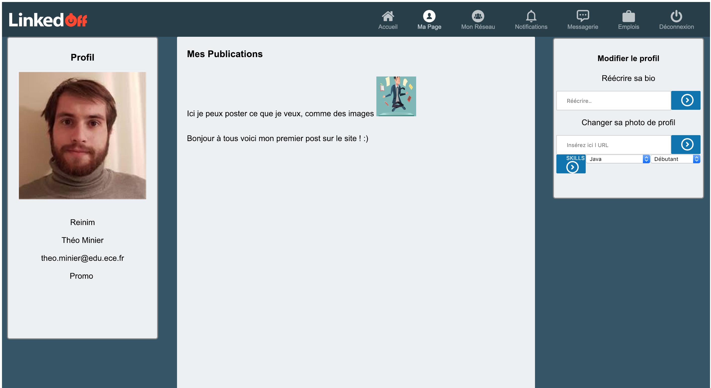
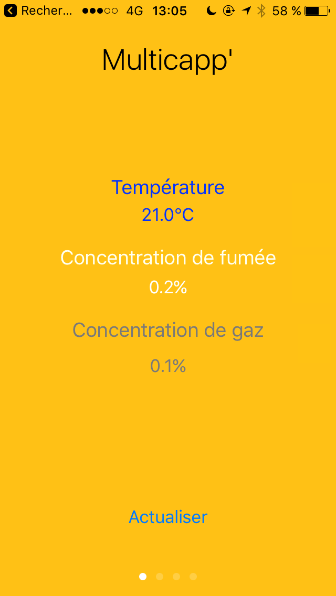
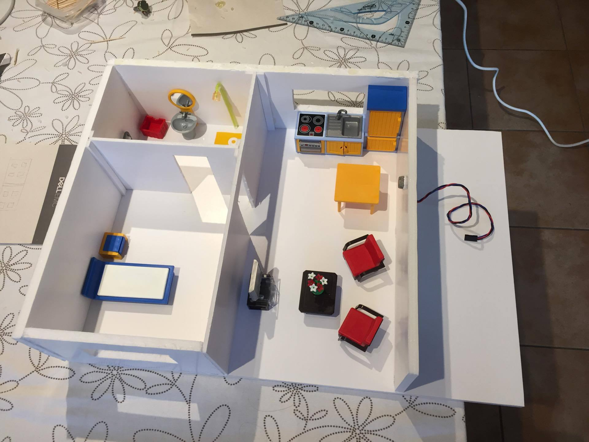
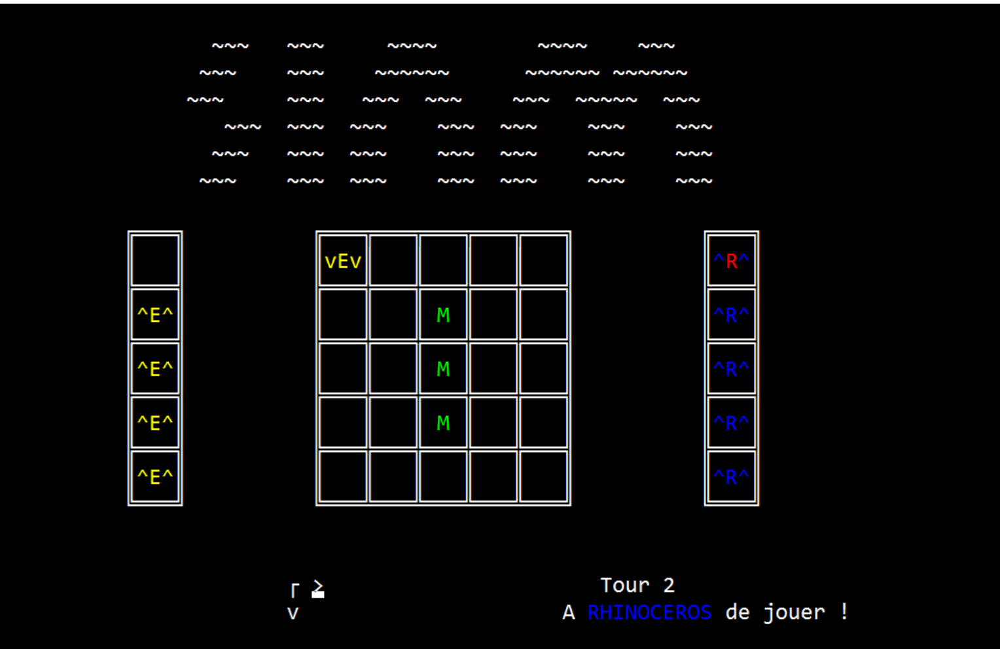
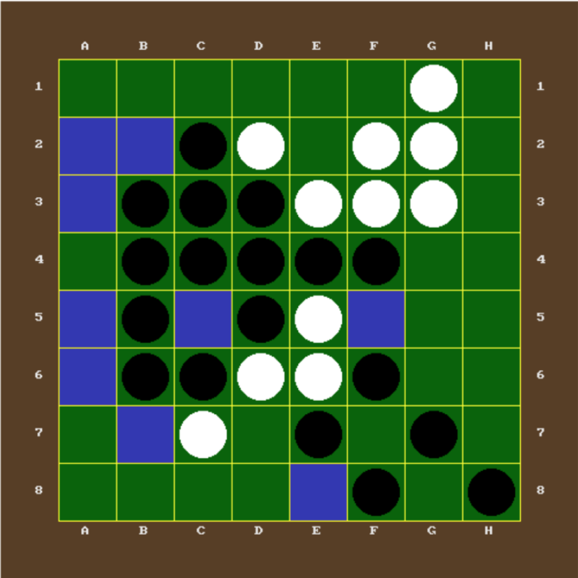

Les projets
Mes différents projets réalisés au sein de de ma formation à l'ECE PARIS
NOXA
L'indicateur d'indemnités en cas de préjudice corporels.

Ce projet de fin de quatrième année, réalisé en groupe de 5, entre septembre 2018 et avril 2019 consiste en une plateforme web combinée à la jurisprudence existante qui donnera, en fonction de mots clés entrés, les potentiels indemnisations que l'utilisateur pourra obtenir.
LINKEDOFF
Un réseau social à vocation professionelle pour les élèves de l'école.

Réalisé à 3 en 2018 lors d'une semaine de sprint à l'école, c'est un site basé sur likendIn avec un système de messagerie, des profils, des posts et des une page pour les offres d'emplois pour postuler.
Multicapp
Un détecteur multifonction d'intérieur, prévenant en cas de fuite de gaz et ou en cas d'incendie.


Dans ce projet en équipe de 6 réalisé entre septembre 2016 à mai 2018, nous avons présenté une maquette et un POC (Proof of concept) de notre détecteur multifonction. Celui-ci était commandé par une application sur iOS et utilisait un Raspberry.
SIAM et Othello
La version numérique de célèbrse jeux de plateau


Ces deux jeux ont été réalisés en console par un camarade et moi-même en C++. L'Othello a également eu une interface graphique et un mode versus contre l'ordinateur basé sur des algorithmes de prédiction.